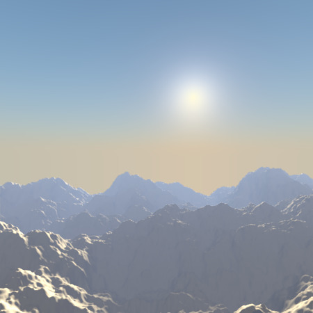
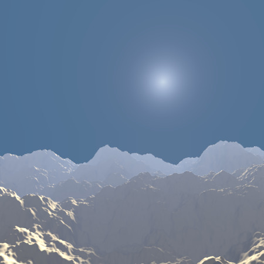
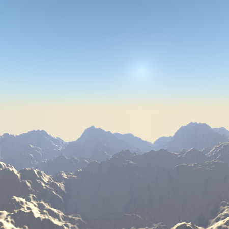
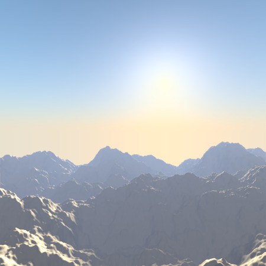
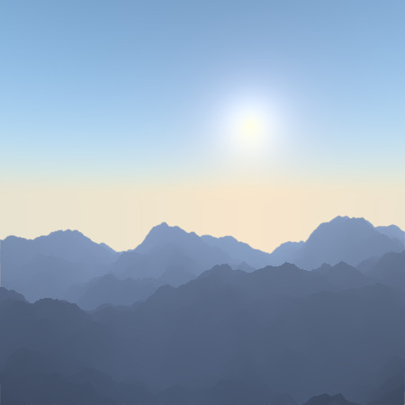
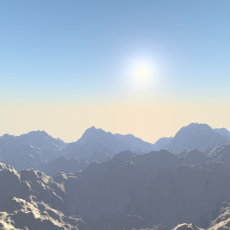

Небо й Атмосфера -- Sky & Atmosphere¶

Панель «Небо й Атмосфера» -- Sky & Atmosphere для сонцевої лампи.
Ця панель дозволяє вам вмикати ефект, що імітує різні властивості реальних неба та атмосфери: розсіювання сонячного світла при проходженні ним через кілометри повітря над головою. Наприклад, коли Сонце знаходиться високо, то небо є синім (а горизонт, дещо білуватий). Коли Сонце знаходиться біля горизонту, небо є темно синім/пурпуровим, а горизонт забарвлюється в оранжевий. Дисперсія, розсіювання атмосферою також більш видима, коли в ній є трохи туману: чим дальше знаходиться об'єкт, тим більш він «знебарвлюється» у світло сірий колір... Вийдіть у сільській місцевості у гарний гарячий день і ви побачите.
Для вмикання цього ефекту ви повинні використовувати джерело освітлення типу «Сонце» -- Sun. Однак, якщо, як і звичайно, позиція такої лампи не важливо, то її обертання є вирішальним: воно визначає, яка година у сцені. Як відправна точка, ви повинні скинути обертання вашої лампи Sun (за допомогою Alt-R, або увівши 0 у кожному полі X, Y, Z секції «Обертання» -- Rotation на панелі «Трансформації» -- Transform регіону Властивості 3D Огляду). Таким чином, ви отримаєте гарне полуденне сонце (у тропіках).
Now, there are two important angles for the Sky/Atmosphere effect: the "incidence" angle (between the light direction and the XY plane), which determines the "hour" of the day (as you might expect, the default rotation -- straight down -- is "mid-day", a light pointing straight up is "midnight", and so on...). And the rotation around the Z axis determines the position of the sun around the camera.

Пунктирна «лінія світла» лампи «Сонце» перетинає фокальну точку камери.
Фактично, щоб гарне уявлення, де сонце знаходиться у світі вашої сцени відносно камери у 3D Огляді, ви повинні завжди мати пунктирну «лінію світла» лампи так, щоб вона перетинала центр огляду камери (її «фокальну» точку), як показано тут на Ілюстрації «Пунктирна «лінія світла» лампи «Сонце» перетинає фокальну точку камери». Таким чином, в огляді камери (Numpad0, центральна частина ілюстрації) ви бачитимете, де створюватиметься цим ефектом «віртуальне» сонце.
Важливо розуміти, що позиція сонця немає жодного значення для цього ефекту: суттєва тільки його орієнтація. Його позиція може допомогти вам тільки при проектуванні вашої сцени.
Опції¶
- Передустави Неба й Атмосфери -- Sun & Sky Presets
- Класично -- Classic
- Пустеля -- Desert
- Гори -- Mountain
Небо -- Sky¶
- Небо -- Sky
- Ця кнопка вмикає устави неба: це створить «небо» із «сонцем», якщо воно видиме в огляді камери, та змішає їх з фоном на основі визначень устав світу сцени у вкладці World.
- Мутність -- Turbidity
- Це загальний параметр, що впливає на вигляд сонця, небо та атмосферу; це параметр атмосфери, де низькі значення описують ясне небо, а високі значення вказують на більш туманне небо. Загалом, низькі значення дають чисте, глибоке синє небо з «маленьким» сонцем; високі значення дають більш червонувате небо з великим ореолом навколо сонця. Зауважте, це єдиний параметр, який може дійсно модифікувати «інтенсивність» освітлення сонцем. Дивіться приклади нижче.
Специфічними контролерами неба є:
- Змішання -- Blending
Це меню вибору показує різні методи змішування. Вибраний з них метод буде використовуватися для змішування неба і сонця з фоном, визначеним в уставах світу сцени World. Ці методи змішування є такими самими, як описані тут -- Mix Compositing Node.
- Фактор -- Factor
- Керує, якою мірою ефект неба і сонця застосовується до фону Світу сцени.
- Колірний Простір -- Color Space
Ці кнопки дозволяють вам вибрати, який колірний простір використовує цей ефект, з наступних варіантів:
- CIE
- REC709
- SMPTE
- Експозиція -- Exposure
Ця кнопка з числом дозволяє вам модифікувати експозицію зображених, рендерених Неба і Сонця (значення 0.0 без жодної корекції).
- Горизонт -- Horizon
- Яскравість -- Brightness
- Керує яскравістю кольорів на горизонті. Це значення повинно бути у діапазоні (0.0 до 10.0); значення біля нуля означають відсутність яскравості по горизонталі, а великі значення для цього параметра збільшують яскравість горизонту. Дивіться приклади нижче.
- Розтікання -- Spread
- Керує розтіканням, поширенням світла на горизонті. Це значення повинно бути у діапазоні (0.0 до 10.0); низькі значення у діапазоні дають менше розповсюдження світла на горизонті, а значення вище у цьому діапазоні дають поширення світла по горизонту через усе небо.
- Сонце -- Sun
- Яскравість -- Brightness
- Керує яскравістю сонця. Це значення має бути у діапазоні (0.0 до 10.0); при низьких значеннях небо буде без сонця, а з високими значеннями небо буде заливатися сонцем.
- Розмір -- Size
- Керує розміром сонця. Це значення повинно бути у діапазоні (0.0 до 10.0), але, зауважте, що низькі значення дають великий розмір сонця, а високі значення призводять до малого розміру сонця. Зауважте, що загальна яскравість сонця залишається постійною (заданою уставою Brightness), а тому, чим більше сонце (менший розмір Size), тим більше воно «зникає» у небі, та навпаки.
- Заднє Світло -- Back Light
- Для «світла, розсіяного позаду», впливає на колір сонця, вищі значення дають більше світла навколо сонця. Його діапазон (-1.0 до 1.0). Від'ємні значення дають менше світла навколо сонця.
Атмосфера -- Atmosphere¶
- Атмосфера -- Atmosphere
- Ця кнопка вмикає устави атмосфери. Це не буде модифікувати фон світу, але намагатиметься імітувати ефекти атмосфери: розсіювання сонячного світла в атмосфері, його затухання, ...
- Інтенсивність -- Intensity
- Сонце -- Sun
- Задає інтенсивність сонця. Його діапазон (0.0 до 10.0). Вищі значення призводять до синішого освітлення далеких об'єктів.
- Відстань -- Distance
- Цей фактор використовується для конвертування Одиниць Blender у зрозумілу одиницю для ефекту атмосфери, він починається від 0 та вищі значення дають більш жовте світло у сцені.
- Розсіювання -- Scattering
- Розсіювання всередину -- Inscattering
- Цей фактор може використовуватися для зменшення ефекту освітлення через розсіювання всередину атмосфери між камерою та об'єктами у сцені. Це значення має бути 1.0, але може бути змінене для створення деяких гарних, але не реалістичних, зображень.
- Погасання -- Extinction
- This factor can be used to decrease the effect of light extinction from objects in the scene. Like Inscattering factor, this parameter should be 1.0 but you can change it; low values result in less light extinction. Its value is in the range (0.0 to 1.0).
Приклади¶
Спершу, подивімося, що стається, коли ми модифікуємо орієнтацію сонця:

Сонце прямо над головою (полудень). |

Сонце глибоко «під Землею» (північ). |

Сонце трохи нижче під горизонтом (кінець вечірніх сутінків). |
{kind=link}
The 2.4 blend-file of these examples.
І тепер, ефекти різних устав (приклади створені за допомогою цього файлу -- this 2.4 blend-file):

Turbidity: 2.0. |

Turbidity: 2.3. |

Turbidity: 5.0. |

Turbidity: 10.0. |
{kind=link}
Небо -- Sky¶

Horizon Brightness: 0.0. |
|

Horizon Brightness: 1.04. |

Horizon Brightness: 1.13. |
{kind=link}
{kind=link}

Horizon Spread: 0.7. |

Horizon Spread: 1.2. |

Horizon Spread: 5.0. |
{kind=link}

Sun Brightness: 0.2. |

Sun Brightness: 0.5. |
|
Sun Brightness: 1.0. |
{kind=link}
{kind=link}

Sun Size: 2.0. |

Sun Size: 4.0. |

Sun Size: 7.0. |

Sun Size: 10.0. |
{kind=link}

Back Light: -1.0. |

Back Light: -0.33. |

Back Light: 0.33. |
Back Light: 1.0. |
Атмосфера -- Atmosphere¶
Для усіх зображів, рендерів нижче, задано «Горизонт: Яскравість» -- Horizon Brightness як 0.2 та «Сонце: Яскравість» -- Sun Brightness як 2.0.

Sun Intensity: 1.0. |
|
|
Sun Intensity: 10.0. |
{kind=link}
{kind=link}
|
Inscattering: 0.1. |

Inscattering: 0.33. |
|
Inscattering: 1.0. |
{kind=link}

Extinction: 0.0. |
|

Extinction: 0.66. |
Extinction: 1.0. |
{kind=link}
{kind=link}
{kind=link}

Distance: 3.0. |
{kind=link}
{kind=link}
{kind=link}
Поради та обмеження¶
Щоб завжди мати направлення лампи Sun у центр камери, ви можете використати примус «Стеження За» -- Track To constraint на об'єкті сонця, з камерою як ціллю, та -Z як вісь для опції "To" (скористайтеся X або Y які вісь опції «Уверх» -- "Up"). Таким чином, для модифікування висоти/позиції сонця на рендереній картинці, вам просто слід перемістити його; орієнтація автоматично обробиться цим примусом. Звичайно, якщо ваша камера сама рухається, то ви повинні також додати, наприклад, примус «Копіювання Локації» -- Copy Location constraint для вашої лампи Sun, з камерою як ціллю та активованою опцією Offset... Таким чином, сонячне світло не буде змінюватися при переміщеннях камери.
Якщо ви використовуєте стандартний тип змішування «Додання» -- Add, то ви повинні скористатися дуже темно-синім кольором світу для отримання коректних «ночей»...
Цей ефект працює дуже добре з лампою типу Hemi, а також і загородою оточення -- ambient occlusion, для заповнення тіней від лампи Sun.
Atmosphere shading currently works incorrectly in reflections and refractions and is only supported for solid-shaded surfaces. This will be addressed in a later release.